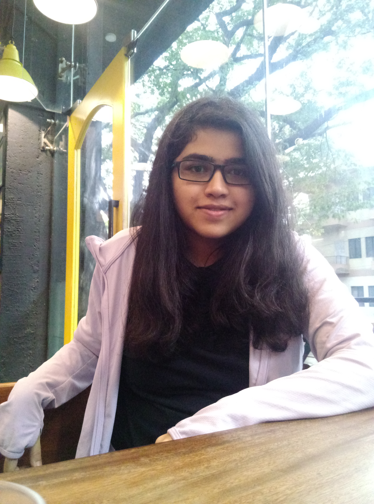

Hi. I'm Rutuja Taware.
I am Master's student majoring in Computer Science at Virginia Tech, USA. I completed my undergrad in 2020 from Pune University, India.
My interests lie in the field of NLP and Software Programming. I also like to swim and play badminton.
Learn about my Graduate Research